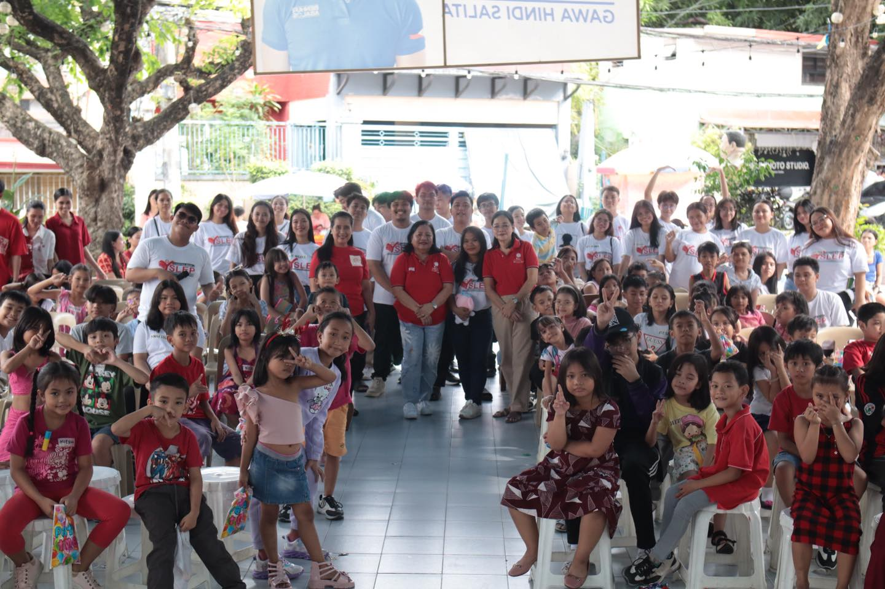
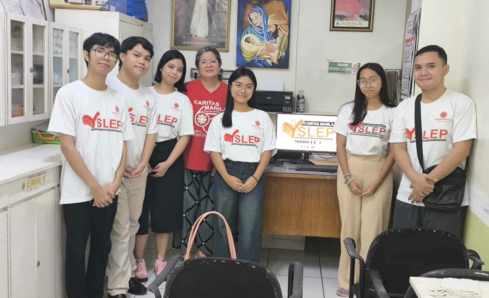
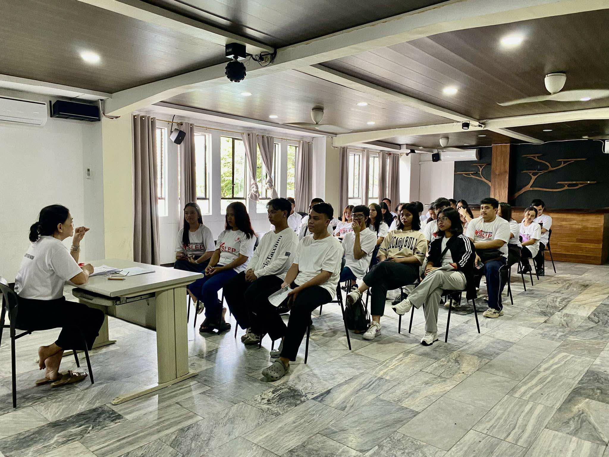
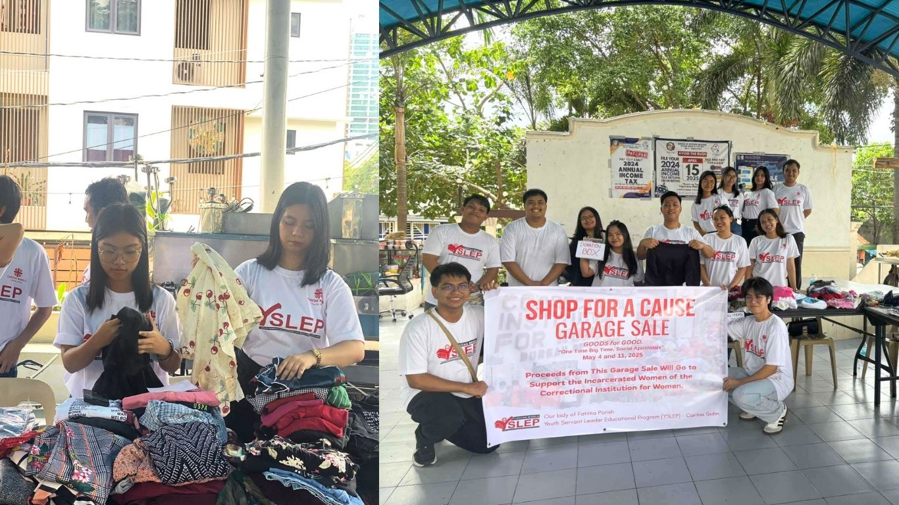
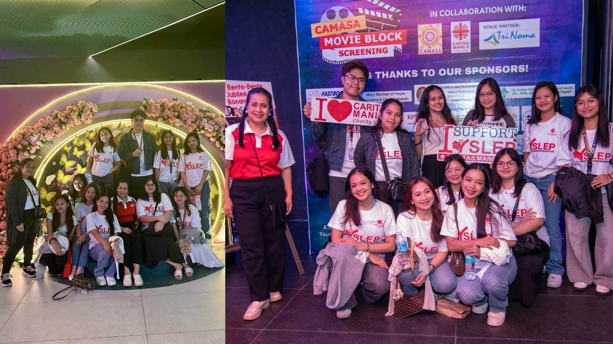

Our Group Activities

Social Apostolate: December Delights
December Delights is a tradition where YSLs share joy, hope, and love through gifts, food, and performances.

Monthly Formation
Held every first or second Sunday, YSLs grow in faith and personal development.

Monthly Meeting
Meetings are held for announcements, documents, and activity planning.

Social Apostolate: Garage Sale
A two-Sunday sale of pre-loved items. Proceeds went to the Correctional Institution for Women.
Holy Spirit Mass
Every school year, YSLs join the Holy Spirit Mass to welcome new scholars.

Fundraising Event of Caritas Manila Alumni Scholar Association (CAMASA) for the benefit of YSLEP
A yearly CAMASA fundraising event featuring the movie Wicked: For Good, dedicated to supporting YSLEP.